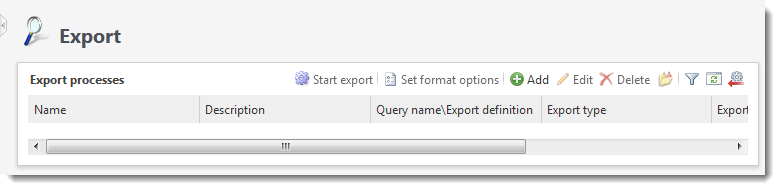
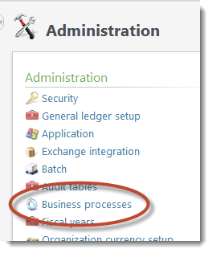
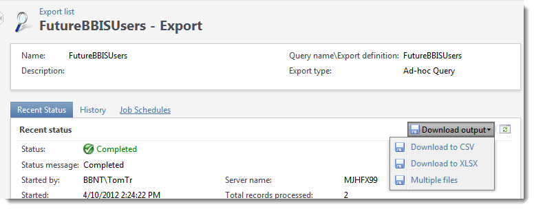
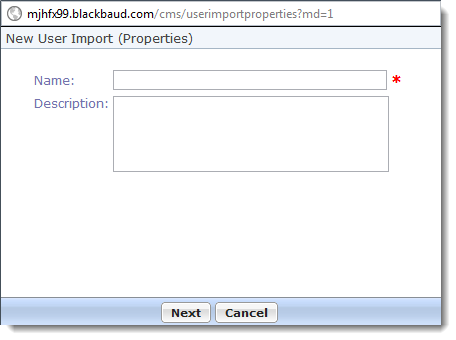
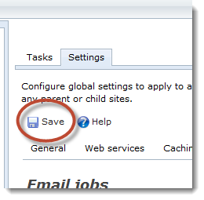

User Imports
In order to link users in Blackbaud Internet Solutions to constituents in Blackbaud CRM, a user import must run. Imports are scheduled items which are created in Users & Security > User imports and scheduled in Administration > Sites and settings > Schedules.

Make sure you distinguish these:
- Linking a user in Blackbaud Internet Solutions to a constituent in Blackbaud CRM
- User Imports into Blackbaud Internet Solutions from Blackbaud Enterpise CRM constituent exports
- Linking a user in Blackbaud Enterprise CRM to a constituent in Blackbaud CRM
- Blackbaud CRM Administration > Application Users
- Mapping a user in Blackbaud Internet Solutions to a user in Blackbaud CRM
- Blackbaud CRM Web > User mapping
With user imports, the idea is to create Blackbaud Internet Solutions users using Blackbaud CRM constituent information. This is the first bullet above. Those Blackbaud Internet Solutions users are then linked to Blackbaud CRM constituents from the viewpoint of Blackbaud Internet Solutions.
Export Constituents from Blackbaud CRM
This topic describes creating an ad-hoc query, export process, and a business process. For more information about these subjects, see the Query and Export Guide.
Step 1 - Create a query of constituents for which to create user accounts. For example:
-
In Blackbaud CRM, navigate to Analysis > Query.

The Query page appears.

- Click Add > Ad-hoc query. The Select a Source View screen appears.
- From Record type, select Constituent, select Constituents from the grid, and click OK.

- At a minimum, select these fields:
- Name
- Lookup ID
- Email addresses / Email address
- Last / Organization / Group / Household name
- Middle name
- First name

- From Set save options, enter a name.
- Click Save.
Step 2 - Create an export for the query. For example:
-
In Blackbaud CRM, navigate to Administration > Export.

The Export page appears.
 - Click Add. The Add export process screen appears.

- Enter a name and from Ad-hoc query, select the ad-hoc query created earlier.

- Click Save. The export process is created.

Step 3 - Schedule the export:
You can manually export the data by clicking Start export.

And, from Administration > Business Processes, you can also view the business process for the export process.

Step 4 - Download the export
There is a set of actions to download export output on the page for the export. The Blackbaud Internet Solutions user import expects a CSV file

Create a User Import
- From Blackbaud Internet Solutions, navigate to Users & security.

- Click User imports. The User imports page appears.

- Click New user import. The New User Import (Properties) screen appears.
 - Enter a name and description.

- Click Next. User Import Wizard appears.

- Click Choose File and browse to the CSV file of the constituent export from Blackbaud CRM.

- Click Upload. The Upload File tab appears.

- Adjust the mappings and configure as desired.
Note Since all of the fields are required, everything must have a mapping. In this example, Blackbaud Enterprise System Record ID corresponds to Lookup ID in Blackbaud CRM.Important Confirm that Lookup ID works for your setup. If not, you can use Sequence ID, which can be retrieved by a Transact-SQL query.
-
Click Preview import. A summary and list appear. The list contains rows with import data including exceptions.
Some possible exceptions are:
- This record is already linked to...
- ... Required field missing
- Click Import file.
- Select scheduling options and email options.
- Click Queue import. The import is queued. It appears in User Imports. From there, you can edit or delete the import.
Schedule User Imports
- From Blackbaud Internet Solutions, navigate to Administration.
- Click Sites & settings.

- For the website, click the Schedules tab on the Settings tab.

- From the Schedules tab, scroll to User imports.

- Adjust the frequency as necessary.
- Scroll back up to the top and click Save.
